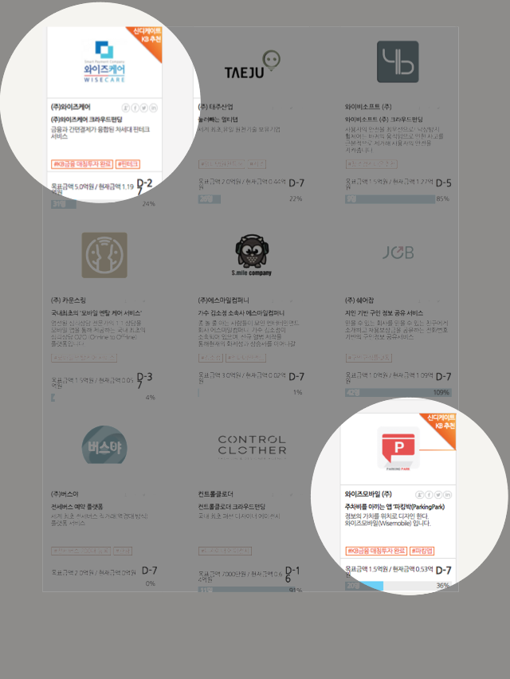

2016-2-17
기준 금액 펀딩에 성공한 스타트업에 KB투자증권 매칭투자 실행 “와이즈케어”, “와이즈모바일” 에 각각 지분 청약 참여
KB금융그룹(www.kbfg.com 회장 윤종규)은 1월 25일부터 진행중인 크라우드펀딩을 활용한 ‘핀테크 스타트업 투자 프로그램”을 통해 ‘와이즈케어(대표 송형석)’와 ‘와이즈모바일(대표 박흥록)’이 매칭투자 대상으로 선정하였습니다.

이 프로그램은 KB금융이 사전에 선정한 4개 핀테크 스타트업에 대한 크라우드펀딩을 증권형 크라우드펀딩 업체인 오픈트레이드(http://otrade.co)를 통해 진행하고, 업체별로 일반투자자 투자 청약분이 기준 금액에 도달한 시점에 KB투자증권에서 동일 금액(업체당 2,500만원)으로 참여하여 모집기간 종료 후 매칭투자가 완료되는 방식으로 진행됩니다.
KB투자증권은 기준을 만족한 두 업체 대한 투자 청약 및 대금 납입을 마쳤으며, 최종 크라우드펀딩 결과에 따라 각 업체의 지분 취득을 확정하게 됩니다. 벤쳐캐피탈을 제외한 국내 금융권에서 크라우드펀딩을 통해 기업 지분 취득을 추진한 것은 이번이 처음입니다.
와이즈케어는 간편결제와 금융을 결합한 신개념 핀테크 서비스인 ‘와이즈 플랜’과 ‘케어플랜’ 등을 통해 가맹점주가 고객에게 다양한 방식의 분납 서비스를 제공할 수 있게 하는 결제 솔루션 개발 업체로, 총 5억원 모집에 15일 기준 1억1,700만원을 청약 받아 24%달성률을 보이고 있습니다.
와이즈모바일은 주차장 정보를 제공하는 모바일앱인 ‘파킹박’ 개발사로, 주차장 사업자와 제휴를 통해 모바일 사전결제 및 주차장 큐레이션 서비스를 준비중인 업체로, 총 1.5억원 모집에 15일 기준 5,198만원을 청약 받아 35% 달성률을 보이고 있습니다.
기존에는 금융권이 관련 정보의 부족과 해당 Biz모델의 사업성 검증이 어려워 핀테크 스타트업에 직접 투자하기는 내부 절차상 어려움이 커서 1회성 투자에 그치는 경우가 많았습니다. 이번 매칭투자 사례는 핀테크 스타트업이 금융권의 투자를 효과적으로 유치할 수 있는 루트를 개척했다는 점에서 투자규모 이상의 의미가 있습니다.
KB금융은 현재 오픈트레이드에서 펀딩 준비중인 모비틀과 더페이도 동일한 방식으로 투자를 진행할 계획입니다.